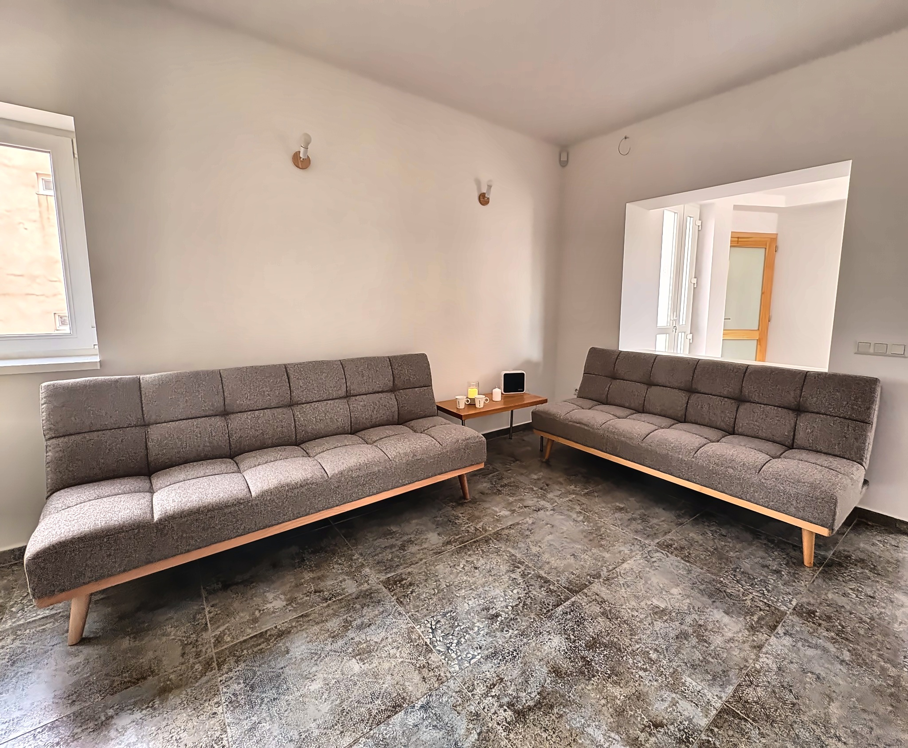

Lelki stabilitás
Az érzelmek felismerése, elfogadása és tudatos megélése segít oldani a belső feszültségeket, és támogatja a kiegyensúlyozottabb működést. A LESZEK-ben ennek adunk teret.
Egy nyugodt, elfogadó tér az önismerethez, az érzelmi intelligencia fejlesztéséhez és a biztonságosabb kapcsolódáshoz.
Időpontot foglalokMegérkezés
A LESZEK Központban az önismeret, az érzelmi intelligencia és a tudatos kapcsolódás kap teret. Székesfehérvár kertvárosában olyan nyugodt, elfogadó helyszínt biztosítunk szakembereknek, ahol gyerekeknek, szülőknek, családoknak és felnőtteknek szóló egyéni vagy csoportos folyamatokat vezethetnek.
Nálunk a fejlődés nem elvárás, hanem lehetőség arra, hogy jobban megértsük önmagunkat, a kapcsolatainkat és azt, ami bennünk történik.
Ismerd meg a LESZEK-etMiben fejlődhetsz nálunk?
Az érzelmek felismerése, elfogadása és tudatos megélése segít oldani a belső feszültségeket, és támogatja a kiegyensúlyozottabb működést. A LESZEK-ben ennek adunk teret.
Az önismeret segít, hogy ne mások véleménye határozza meg, kik vagyunk. Így tudatosabban reagálhatunk, és kiegyensúlyozottabban kapcsolódhatunk másokhoz.
Az érzelmek felismerése és szabályozása tanulható. Ez segít megállni az automatikus reakciók előtt, és tudatosabban, saját értékeink szerint dönteni.
Tereink

A LESZEK hat foglalkoztató tere és sószobája különböző létszámú és hangulatú alkalmakhoz igazodik. Egyéni konzultációkhoz, páros folyamatokhoz, csoportos foglalkozásokhoz, workshopokhoz és önismereti programokhoz is nyugodt, igényes környezetet biztosítunk.
Számos egyéni igényt figyelembevéve, olyan tereket hoztunk létre, amelyek hangulata és művészi környezete elősegíti a belső folyamatainkkal való könnyebb kapcsolódást, és hatékonyabb munkát.
Megnézem a tereketTérhasználat
Nézd meg a tereinket és találd meg melyik áll Hozzád közel és melyik kapcsolódik leginkább a foglalkozásaidhoz!
Foglalási rendszerünk segítségével könnyedén kiválaszthatod a számodra megfelelő teret és időpontot.
Foglalás